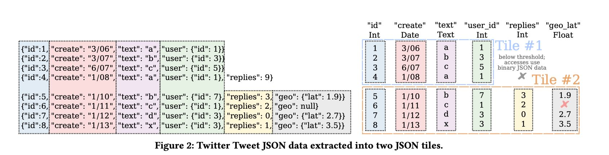
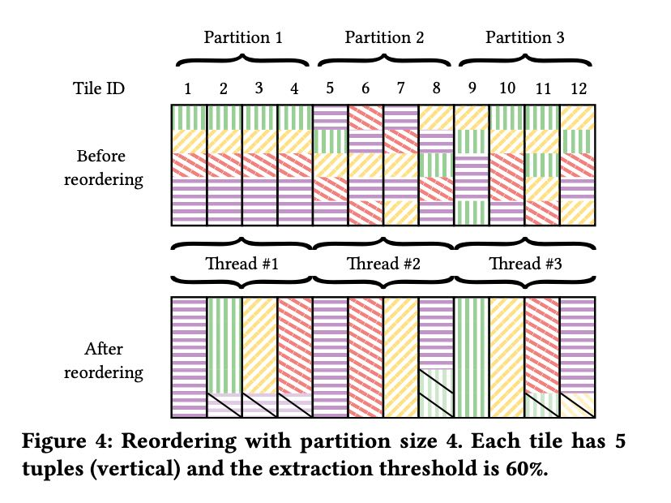

JSON Tiles Fast Analytics on Semi-Structured Data
这篇文章主要讨论怎么来优化半结构化数据尤其是json data的访问，尤其是如何透明地加速这些数据的访问。文章提出的思路就是json tiles: 对json进行分类，将某一类(key paths完全相同的)json放置在一起，然后将这些key paths对应的columns来做物化(物化列)。对于没有办法物化的部分，那么按照jsonb(binary format) 来来存储。这个东西涉及面比较广，里面细节也比较多。
比如下面8个json tuples被分为了2个tiles: 第一个tiles的commmon pattern是{i,c,t,u_i,r}, 第二个tiles的common pattern包含了{g_l}. 那么第一个tiles其中{i,c,t,u,i_r}这些列都被物化了出来单独存储。

怎么生成json tiles涉及到怎么对tuple reordering以及怎么选择frequent itemset(common pattern). 每个json tiles大约是4096个tuples, 然后一般8个json tiles之间会做reordering(per partition). frequent itemset mining算法文章里面说是FPGrowth(这个不太清楚是什么)+剪枝优化。
至于怎么做reordering, 我看的有点似懂非懂：在一个partition内先对每个json tiles选择frequent itemset, 然后使用贪心算法对json tuple知道最匹配的itemset. 之后继续遍历所有的json tuples: 如果不属于这个json tiles而可以和后面json tiles互换的话，那么就可以做reordering. 总之就是尽可能地让json tuples放在属于它的json tiles里面。
reordering目的是使得json tuples之间的pattern是非常类似的，这样就有助于尽可能地多发现物化列。

在处理数组的时候，常见办法也只是物化数组的前面X个元素。
[!NOTE]
Another interesting challenge arises from heavily nested arrays. If the number of elements in an array is similar in all documents of a tile, JSON tiles is able to materialize all frequent elements. However, if the number varies, JSON tiles materializes only the leading ele- ments that are frequent across all documents. For example, if every document contains an array with 𝑥 elements but some documents have 𝑥 + 𝑐 array elements, only the first 𝑥 elements are extracted.
剩下的问题就是怎么改造DB engine来做到query json data透明加速：如果访问的数据已经被物化的话，就不用去解析jsonb data. 此外有了这些物化列，还可以收集到更准确的统计信息。